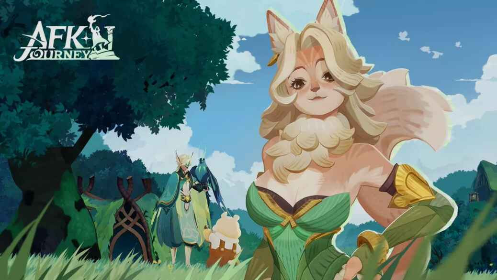

Menyelami Dunia AFK Journey: Petualangan Fantasi Idle RPG yang Memikat

AFK Journey telah menjadi salah satu game RPG idle paling populer di tahun 2024-2025, menawarkan pengalaman bermain yang santai namun tetap penuh tantangan dan strategi. Dengan visual bergaya storybook yang memanjakan mata, cerita epik, serta sistem progresi yang inovatif, game ini berhasil memikat jutaan pemain di seluruh dunia, baik di perangkat mobile maupun PC. Artikel ini akan membahas secara mendalam segala aspek AFK Journey: mulai dari cerita, gameplay, fitur, tips bermain, hingga update terbaru musim 2025.
Mengenal AFK Journey: Dunia Esperia yang Menawan
AFK Journey membawa kamu ke dunia Esperia, sebuah alam fantasi yang penuh misteri, sihir, dan konflik abadi antara kebaikan dan kejahatan. Cerita utama berpusat pada karakter utama yang berjuang melawan Faceless, makhluk misterius yang mengancam keseimbangan dunia. Konflik ini berkembang secara bertahap melalui berbagai quest utama dan sampingan, yang memperkenalkan kamu pada karakter-karakter unik dari berbagai ras dan faksi.
Visual AFK Journey menjadi salah satu daya tarik utama. Nuansa cozy dan warna-warna cerah membuat setiap sudut Esperia terasa hidup, sementara desain karakter yang ekspresif menambah kedalaman pada pengalaman bermain.
Gameplay AFK Journey: Kombinasi Idle, Eksplorasi, dan Strategi
1. Eksplorasi Dunia
Kamu bebas menjelajahi dunia Esperia dengan kontrol sederhana—menggunakan WASD di PC atau tap di mobile. Setiap area menyimpan harta karun, rahasia, serta tantangan yang menunggu untuk dipecahkan. Sistem mini-map memudahkan navigasi, sementara fitur auto-pathing membantu kamu menuju tujuan quest dengan cepat.
2. Sistem Hero dan Progresi
AFK Journey mengusung sistem hero berbasis gacha, di mana kamu dapat mengumpulkan lebih dari 40 hero dari enam faksi berbeda. Setiap hero memiliki tiga skill utama yang dapat di-upgrade, dan tiga skill tambahan yang terbuka di level ascension lebih tinggi. Progresi karakter dilakukan melalui leveling, ascension menggunakan duplikat atau Acorns, serta pemakaian equipment berbasis kelas.
Fitur Resonating Hall memungkinkan lima hero terkuat memberikan boost level ke seluruh hero lain, sehingga kamu bisa bereksperimen dengan berbagai komposisi tim tanpa harus grind dari awal setiap kali mendapatkan hero baru.
3. Sistem AFK dan Auto-Battle
Salah satu keunikan utama AFK Journey adalah sistem AFK (Away From Keyboard) yang memungkinkan kamu tetap mendapatkan loot, exp, dan equipment meski sedang offline. Fitur Fast Rewards memberikan dua kali klaim loot AFK setiap hari, mempercepat progresi tanpa harus bermain berjam-jam.
Sistem auto-battle membuat pertarungan berjalan otomatis, namun kamu tetap harus mengatur formasi dan memilih hero yang tepat untuk menghadapi berbagai jenis musuh. Hex grid pada battlefield memberi ruang untuk strategi positioning yang menentukan hasil pertempuran.
4. Beragam Mode Permainan
AFK Journey menawarkan banyak mode permainan untuk mengusir kebosanan, antara lain:
- Dream Realm: Melawan boss harian dengan hadiah menarik.
- Arena: PvP melawan pemain lain secara otomatis.
- Honor Duel: PvP draft mode yang menguji kreativitas dalam membangun tim.
- Arcane Labyrinth: Dungeon dengan tingkat kesulitan meningkat.
- Legend Trial: Tower mode dengan tantangan berbasis faksi.
- Event Musiman: Event khusus dengan reward eksklusif.
Fitur-Fitur Unik yang Membuat AFK Journey Berbeda
Visual dan Animasi Karakter
Karakter dalam AFK Journey tidak hanya menarik secara desain, tapi juga memiliki animasi yang hidup dan ekspresif. Setiap hero terasa unik, baik dari segi visual maupun gaya bertarung. Hal ini membuat proses mengoleksi dan membangun tim menjadi sangat memuaskan.
Cerita dan Lore Mendalam
Cerita utama dan side quest disajikan dengan narasi yang engaging, memperkenalkan kamu pada lore Esperia yang kaya. Banyak karakter yang merupakan “reuni” dari game AFK Arena, namun dengan tampilan dan peran baru yang lebih segar.
Sistem Sosial dan Guild
Fitur guild memungkinkan kamu berinteraksi, berbagi hadiah, dan berpartisipasi dalam event bersama. Update terbaru juga menjanjikan peningkatan fitur sosial untuk mempererat komunitas.
Kolaborasi dan Event Spesial
AFK Journey dikenal sering menghadirkan kolaborasi dengan franchise populer seperti Overlord, Persona, dan Prince of Persia. Event kolaborasi ini biasanya menghadirkan hero baru, skin eksklusif, serta cerita crossover yang menarik.
Tips dan Trik Bermain AFK Journey untuk Pemula
- Fokus pada Hero Utama
Pilih lima hero terbaik untuk dijadikan “Hands of Resonance” di Resonating Hall. Prioritaskan leveling dan equipment pada mereka untuk mempercepat progresi seluruh hero lain. - Manfaatkan Sistem AFK
Jangan lupa klaim loot AFK dan Fast Rewards setiap hari. Ini adalah sumber utama exp, gold, dan equipment. - Eksperimen Formasi
Cobalah berbagai formasi dan kombinasi hero. Setiap musuh punya kelemahan berbeda, jadi jangan ragu mengganti posisi dan komposisi tim sebelum bertarung. - Selesaikan Daily Quest dan Event
Daily quest bisa diselesaikan dalam waktu singkat dan memberikan reward penting. Ikuti juga event musiman untuk hadiah eksklusif. - Gunakan Resource dengan Bijak
Jangan terburu-buru menghabiskan resource untuk semua hero. Prioritaskan hero meta atau favorit yang sering digunakan.
Update dan Roadmap 2025: Apa yang Baru di AFK Journey?
Tahun 2025 menjadi tahun besar untuk AFK Journey dengan hadirnya berbagai update dan fitur baru, antara lain:
- Tema Musiman: Mulai dari Snow Theme, Lava Theme, hingga Ancient Theme, masing-masing membawa area, karakter, dan mekanik baru.
- Hero Optimization: Karakter lama seperti Muriel dan Walker mendapat upgrade skill Supreme+, membuat mereka lebih kompetitif.
- Dream Realm Boss Baru: Penambahan boss seperti Craz Shelbert dan Plague Creeper menambah variasi tantangan.
- Play Your Own Way: Fitur baru yang memungkinkan kamu memilih fokus reward sesuai preferensi, baik PvP maupun PvE.
- Simulation Mode: Mode uji coba hero dengan stat maksimal, mirip guild trials di AFK Arena.
- Kolaborasi Baru: Potensi crossover dengan franchise besar yang membawa karakter dan cerita baru ke Esperia.
Kelebihan dan Kekurangan AFK Journey
| Kelebihan | Kekurangan |
|---|---|
|
|
Komunitas dan Masa Depan AFK Journey
Komunitas AFK Journey sangat aktif, baik di Discord, Facebook, maupun forum resmi. Banyak pemain berbagi tips, strategi, dan fanart, menciptakan atmosfer yang ramah bagi pendatang baru maupun veteran.
Dengan roadmap update yang ambisius dan potensi kolaborasi besar di masa depan, AFK Journey diprediksi akan terus berkembang dan menjadi salah satu game idle RPG terdepan di pasar global.
AFK Journey menawarkan pengalaman RPG idle yang kaya akan cerita, strategi, dan visual menawan. Baik kamu pencinta game santai maupun penggemar strategi mendalam, game ini punya sesuatu untuk semua orang. Dengan update musiman, event kolaborasi, serta komunitas yang solid, AFK Journey adalah petualangan yang layak dicoba dan dijalani.
Jangan lewatkan kesempatan untuk mempercepat kemajuan dan memperkaya pengalaman bermainmu dengan mudah. Kamu bisa melakukan Top Up AFK Journey di Topupgim, platform terpercaya yang menyediakan layanan top up cepat dan aman. Dengan begitu, perjalananmu di dunia Esperia akan semakin seru dan lancar.